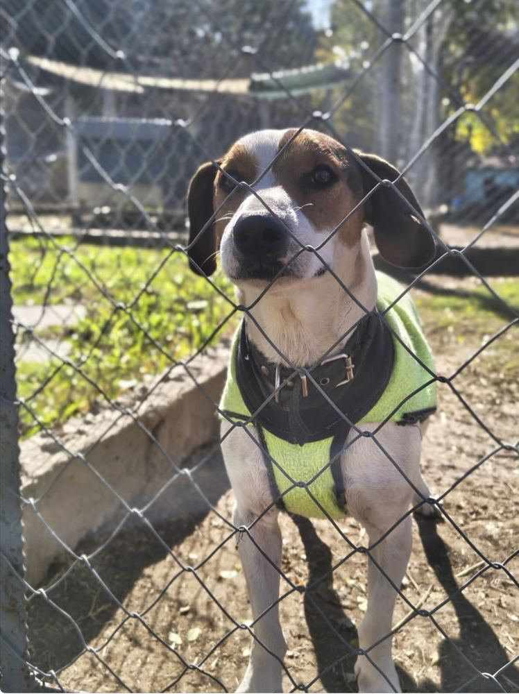
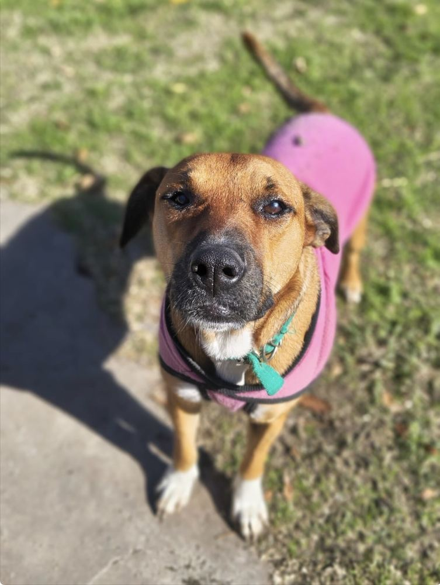

Cada rescate empieza con la decisión de no mirar para otro lado.
Somos APA La Plata: una asociación civil sin fines de lucro que desde 1982 rescata, cuida y reubica perros en situación de calle, abandono o maltrato en la ciudad de La Plata.
 Quiero adoptar
Quiero adoptarUn refugio sostenido a pulmón
Sostenemos un refugio propio donde conviven decenas de perros a la espera de adopción. Muchos llegaron de la calle, otros fueron entregados por sus familias o rescatados de situaciones de maltrato.
El trabajo diario —alimentación, atención veterinaria, limpieza y cuidado— lo realiza un grupo reducido de voluntarios que dedica su tiempo libre al refugio.


Sin ayuda estatal, gracias a socios y donantes
No recibimos ningún tipo de subsidio ni ayuda estatal. Todo se sostiene con los aportes de nuestros socios y con donaciones puntuales de quienes se acercan a colaborar.
Nuestra misión es simple: que ningún perro rescatado se quede sin la oportunidad de tener una familia, y que cada adopción sea responsable y para toda la vida del animal.
A quién nos dirigimos
Adoptantes potenciales
Personas y familias de La Plata que buscan adoptar un perro y necesitan conocer el proceso, los requisitos y a los animales disponibles.
Comunidad de seguidores
Personas que ya siguen a APA en redes y buscan un canal más ordenado para informarse sobre el refugio.
Donantes y socios
Personas dispuestas a colaborar de forma sostenida o puntual con el sostenimiento del refugio.
Voluntarios potenciales
Personas interesadas en sumarse a las tareas diarias del refugio.